-
Our Snowy Day
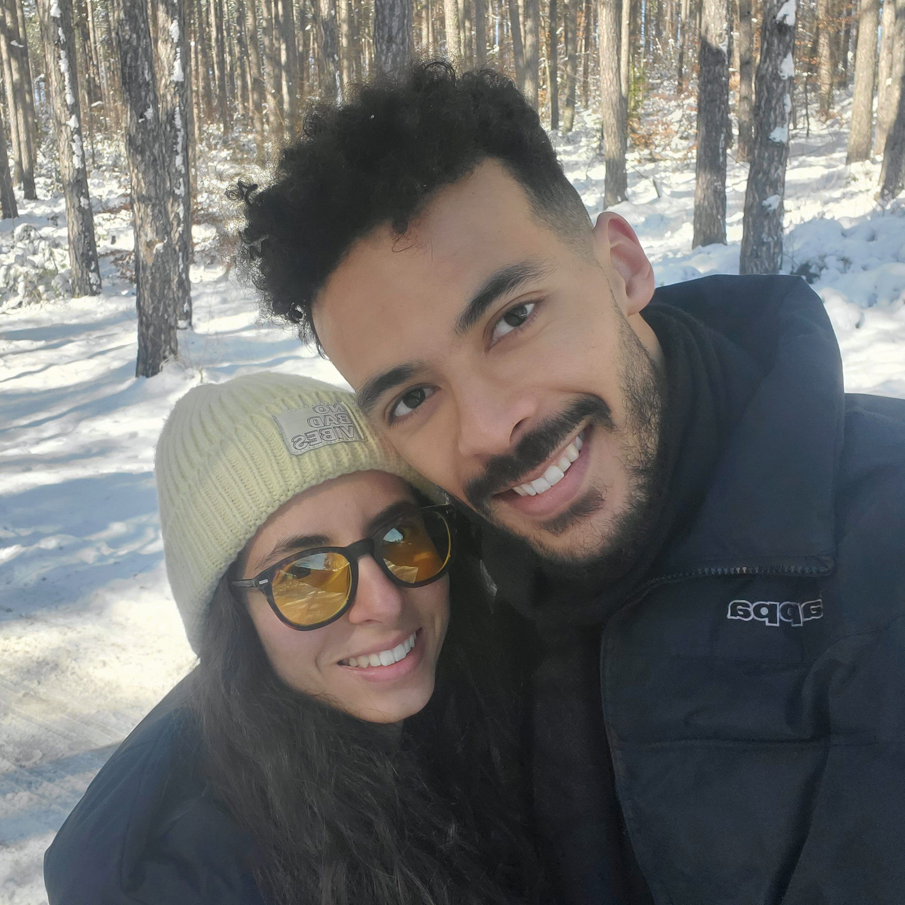24/01/2023
The first time in my life I left with the objective of simply enjoy and admire the snow. We ran 'til la croix - I don't know you, but i felt hot after that HHH. It's a day very special for me.
-
Valentine's in Montpellier
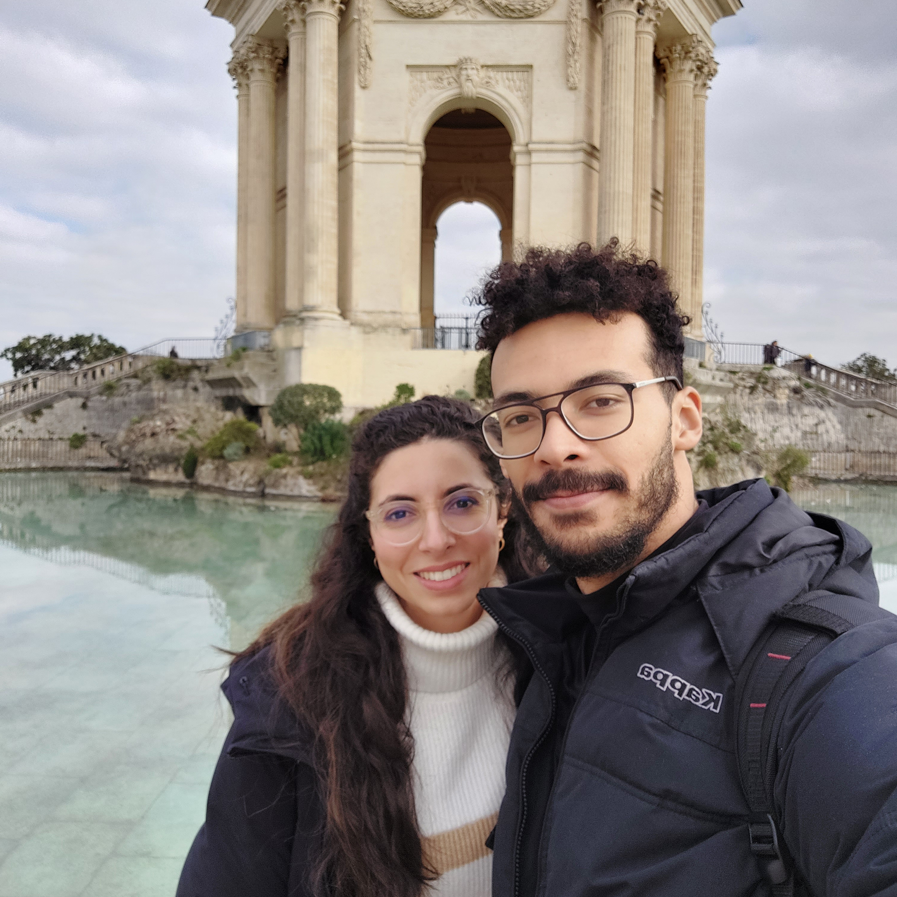14/02/2024
A 2-day trip to Montpellier after Constant surprised us, hhh. I'll be always glad for me to have followed up with the idea of asking him. I'll never forget of how you almost cried in happiness. The city wasn't perfect - a lot of works everywhere - but it was our first trip together and I could get that "Ce beau gosse a vraiment une femme marveilleuse" shirt.
-
1st Time in Sevérac
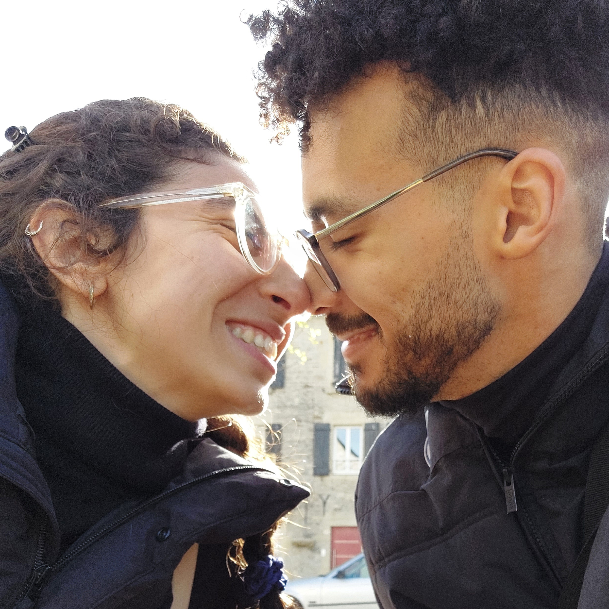23/04/2023
First time you came to Mende after you left to Rennes. You asked me what I wanted for the weekend and I said "You to come here.". So you came. And we got a BlaBlaCar from Séverac 'til Clermont and from there you got another one till Rennes. We've bought some stuff in one boulangerie nearby, cleaned the table with some kleanex and ate and took photos there 'til the time of the ride. One of these photos that would come to be our favorite one.
-
2nd Time in Séverac
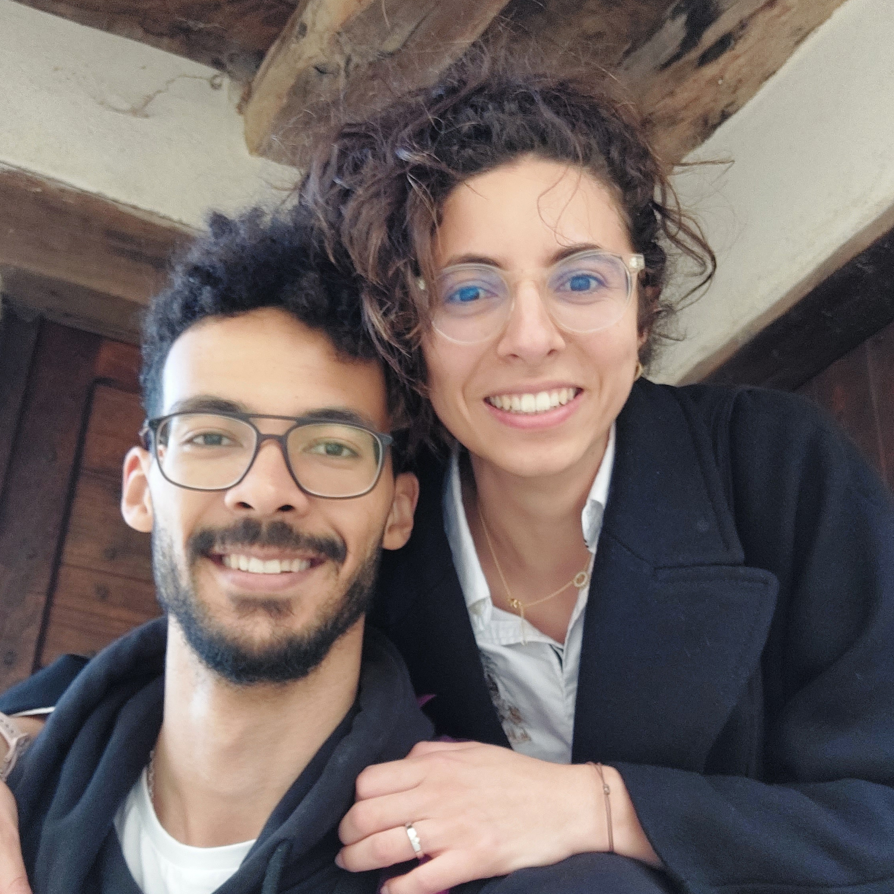08/05/2023
Our second time together in Séverac, this time for a direct to Rennes BlaBlaCar. It was the Monday after the final. And this time we had enough time to walk around and get to find the château from "Séverac-Le-Château". Besides that, the weather was nice, so we walked a lot and saw many good things, included here "the oldest house in France", la maison de Jeanne. Even today I can't find words to explain how beautiful your hair was that day...
-
St. Michel
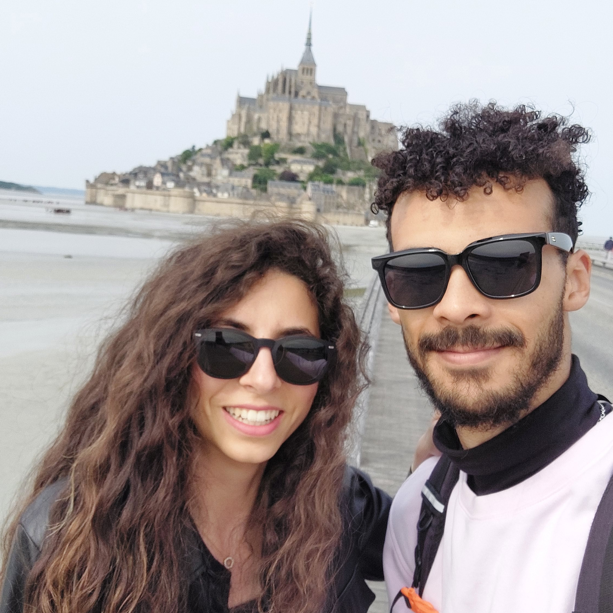18/05/2023
Our first trip together leaving from Rennes. My hair was terrible! Hhh You could have told me :') It seemed I was getting bald. We took the bus at la gare and walked until the citadel. It was very nice to visit the monastery. I was reading a book where the characters went inside one, so the timing was perfect.
-
Arcachon

21/05/2023
You were really wanting to see the beach, so we searched and searched. I couldn't find a a good place abroad for us to go outside of France, so we decided for Arcachon, hoping for some sunny day, despite knowing it wouldn't be that hot. In the way, we passed thru Boradeaux, which gave you some good feelings about your parents first trip after they've got married. In Arcachon, we went to Al Mounia, my first time in a Moroccan restaurant. You didn't approve the food hhh, and later we came to know about news of problems with Moroccan clients there, so it was a polemic place. Sadly you felt bad while we were there, but we were lucky to be staying in a hotel with very nice owners, they helped us to find medication for you, giving me a ride and taking me through the cities nearby in search of a open pharmacy. After that we went to La Dune du Pilat and you were very strong on that day, hanging on even feeling not well. We thought we would lose the bus, so we ran and ran, but in the end it was fine.
-
St. Malo

28/05/2023
To celebrate my birthday, we decided to go to St. Malo. We had luck this time: it was still not really hot for a beach, but we had sun. We prepared sandwiches to have as lunch. We walked thru the walls, saw many shops, ate bretonne cookies, sat on the beach to have our sandwiches, you were attacked by a seagull and the war between you and them was once more declared.
-
St. Malo #2
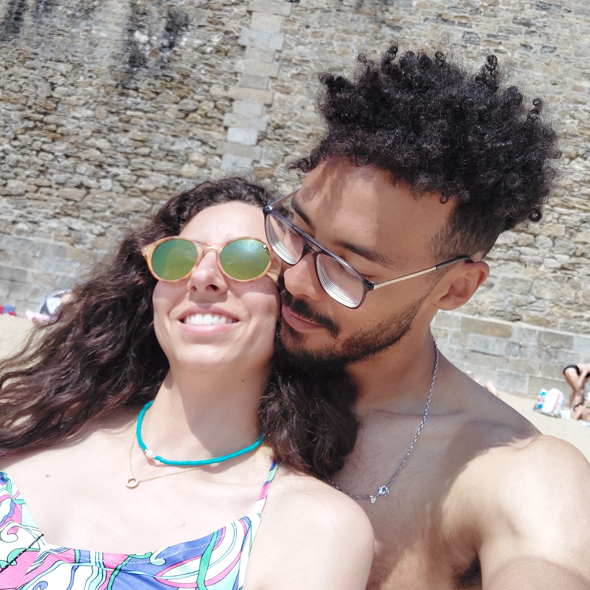28/05/2023
And since it was the first day we got to sit on the sand and enjoy the beach together, as well the first time we got a light bronze, it deserved this second photo too.
-
Brussels

14/07/2023
Our first trip together abroad. They could have made a model contest this day, so beautiful and elegant you were, you would've win it easily. Everybody looked at you wherever we passed. We decided to make this old styled photo and we got very nice souvenir from Brussels. We had a good suprise with the restaurant - Beat.
-
Brussels #2

15/07/2023
We also visited museums, climbed towers, saw the Manneken Pis, saw a marriage happening, ate fries, le gauffre and I can't forget, we lost our plane hhhh. And we came back by bus, a long trip, that didn't seem that long after all the craziness with the flight.
-
Lunches in Rennes

10/08/2023
This was our last lunch before the beginning of the new season. To be honest, I don't remember what we ate that day. But I remember this green shirt of yours and your hair in braid. The days, after all, got a bit warmer, since you could use that t-shirt... I remember to be crying while leaving after that day.
-
29th BDay
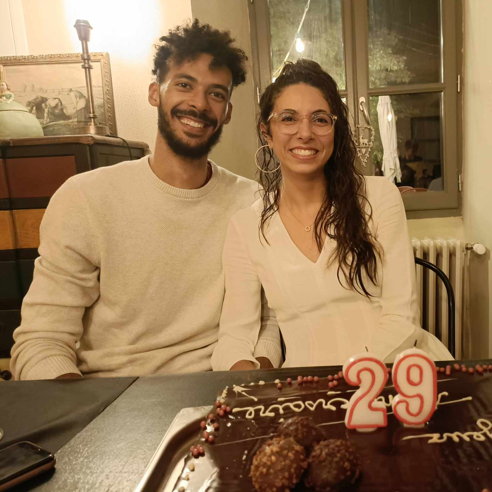31/08/2023
When I arrived, I was very excited for this day. As soon as I met Mathilde, Émilie and your other coleagues I talked to them to organize it. Mathilde told me she would take care of making the reservation at Notto's and I took care of inviting people and deciding some other details. Thank God we could leave earlier that day from the friendly match and celebrate this with you. And since you had just presented your thesis, it also served well to this... A double celebration! I was and am very proud of you for that day. I saw you being so professional, so incredible, you were so beautiful, so amazing there during that presentation. I couldn't understand very well the professors talking, but I heard they mentioning the bibliography and I was so afraid I've commited some mistake... But everything went well and you got it!
-
Ste. Énimie
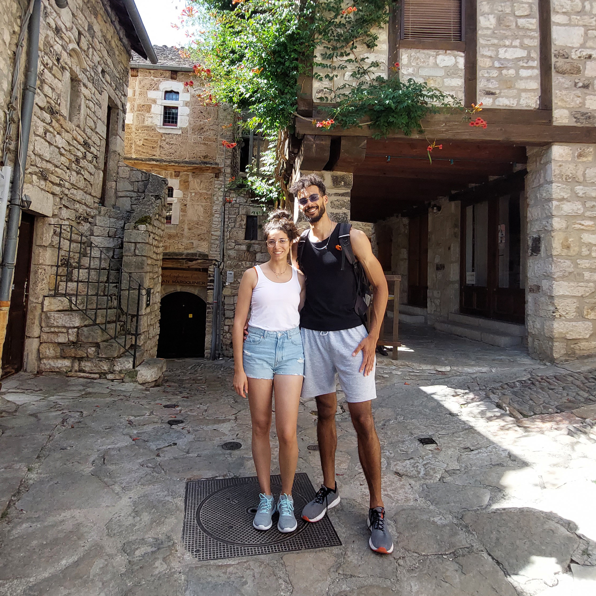03/09/2023
Weekend when we went to get to know les gorges. With some sun, to swim, to see the villages nearby and also to have a very refreshing fruit ice cream. You seemed so happy while swimming. I'm glad I could take many photos of you that day. I really liked that swimming suit of yours, from the ones I saw, it's my favorite one. It cold have been a bit warmer so we would swim more, I remember getting cold too fastly.
-
Night in Reims
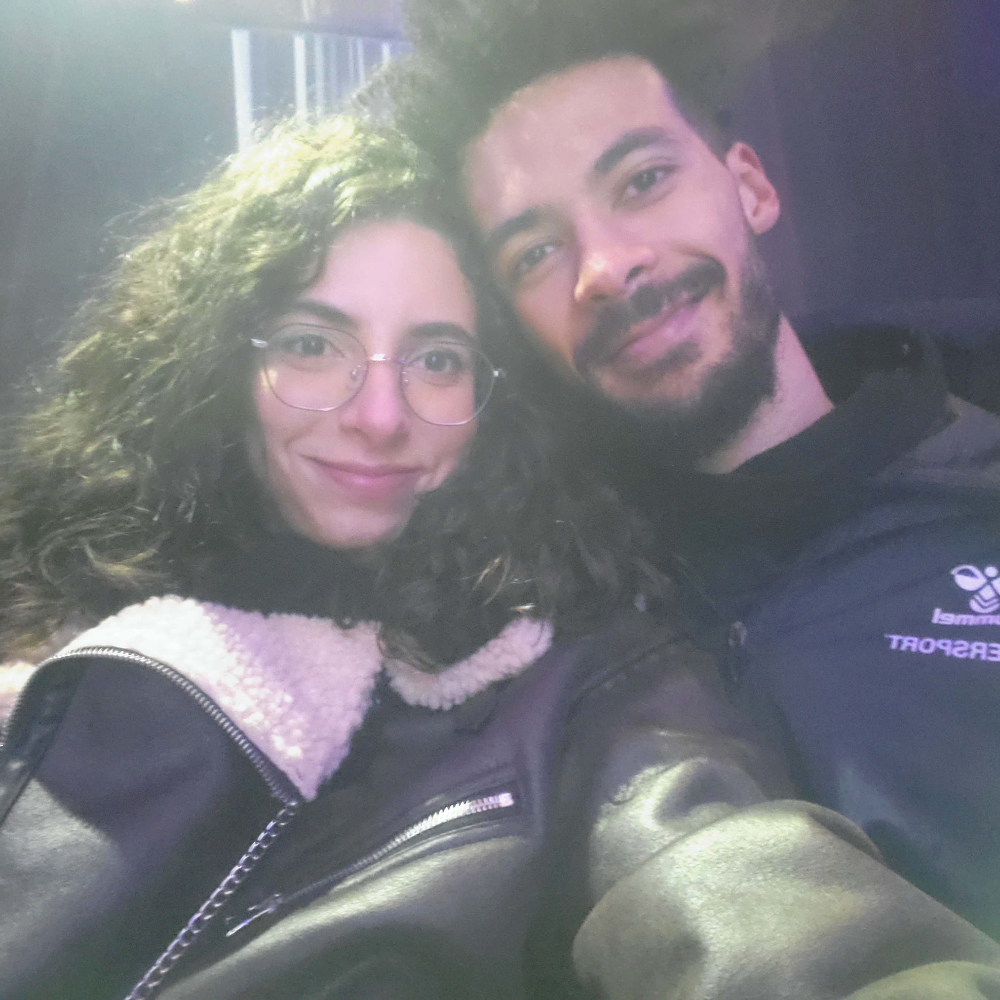25/11/2023
The second game away that you came to see me. We went out right after the game to see Le Marché de Noël à Reims. It had a good size, there was a good amount of people, we entered the "eye" - it was my first or second time? Please help me, I know we went twice and the 3rd time I've let it go because it was too crowded or too expensive -, I really enjoyed doing it with you, I was really missing you and I was very very happy that night. We also stop to eat a kebab and I tried that soda "hawaii" and it was quite good. And I could give you that famous jacket hhh
-
Half Day in Paris

26/11/2023
On the next morning we left to Paris, it was also my first time there and we decided to visit the Louvre. I totally disapprove what they've done to have all of those historycal pieces there, but I really enjoyed seeing them, I really did. We also checked Le Marché de Noël there in the Jardin des Tuileries and walked thru that famous street with a lot of expensive brands that leads to L'Arc de Triomphe. I've never had the will to really see Paris, but I liked it, and above it, I liked being there with you. You made it way more special with your simple presence. And we also saw 15 people with the same jacket as you hhhh
-
1st Xmas Together
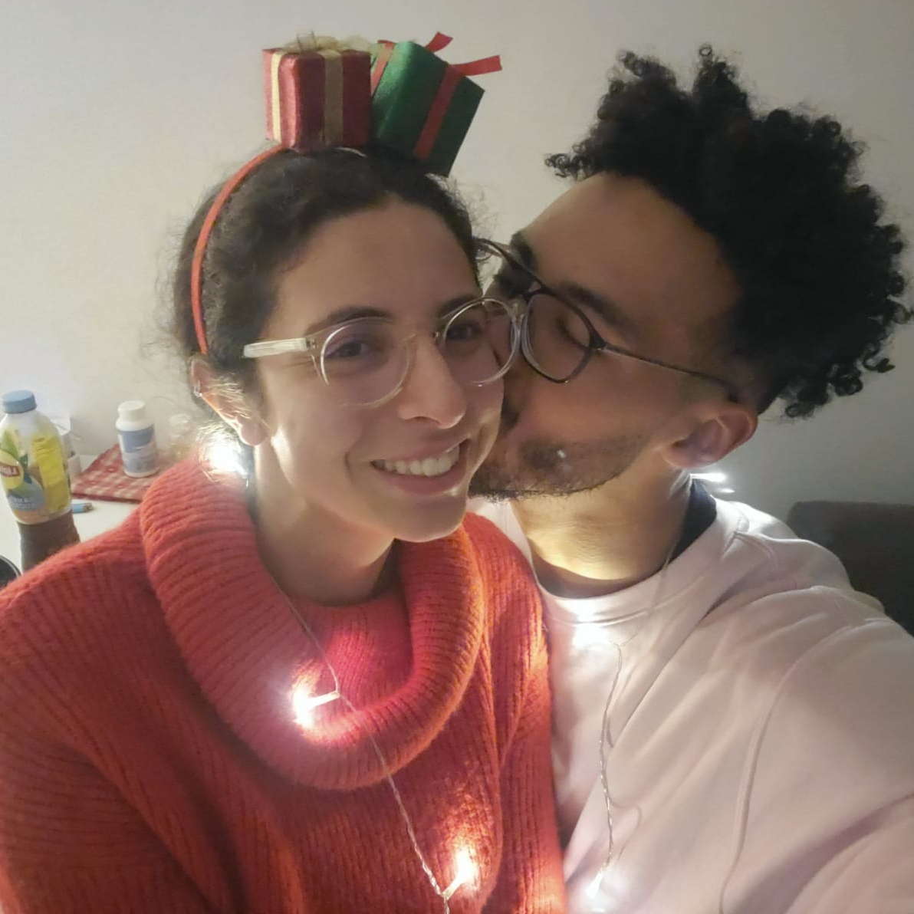25/12/2023
This was when I had the best Christmas in my life. We cooked together. You bought candles. We had a very good and calm time just the two of us. We turned on the lights, put some decoration on ourselves and took photos. I really loved these days. I'm still very glad I decided to stay until the morning.
-
Seeking Baby Clothes in Nantes
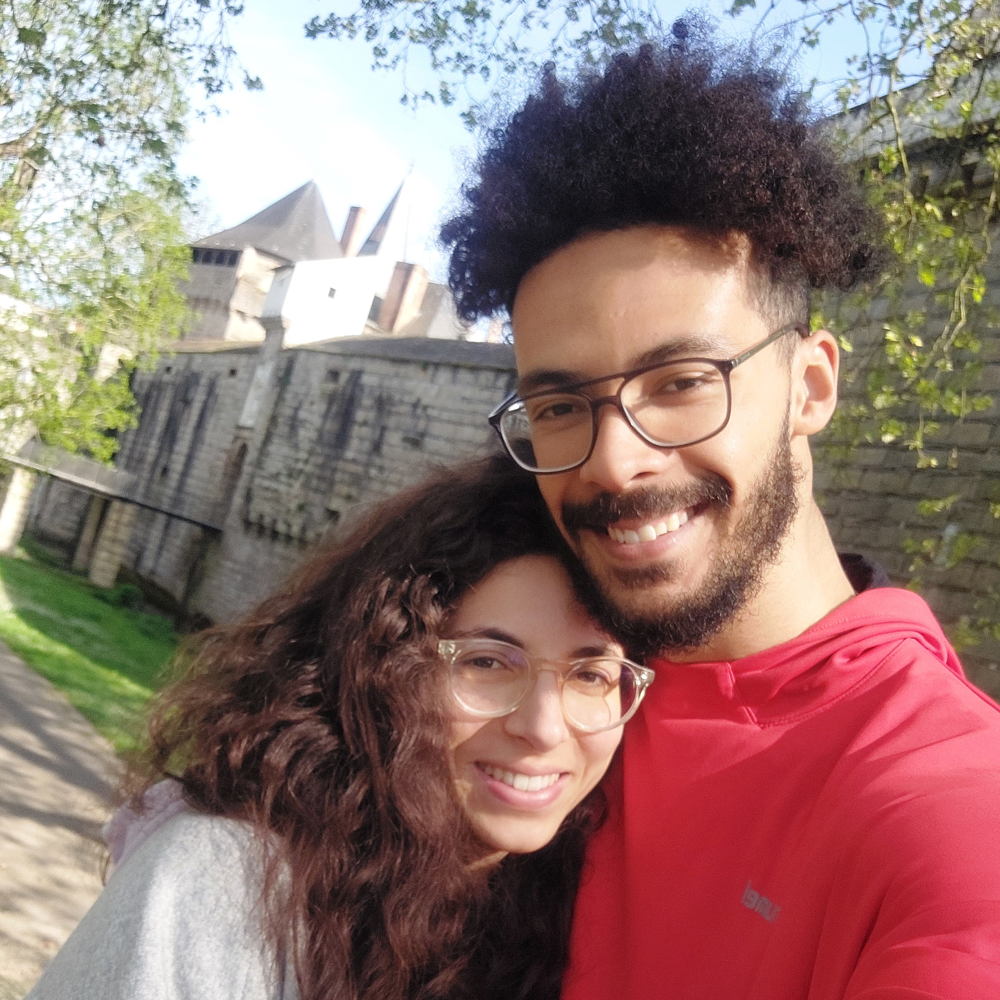13/04/2024
After that, we stayed our longest time without seeing each other. Then I came to Rennes sometimes, you went to Mende too, and this was after the end of the season. We went to Nantes, to Primark to search for clothes for your friend's newborn, for Hud and for Abila's 1 year birthday. I can't forget I chose the best gift that was even in dispute and I won't forget to send one to Hud as well. Besides the long search,choices being done and cancelled and redone, we also stopped to see Le Château d'Anne de Bretagne and to know abit of her history.
-
Sara in Make-upland

04/05/2024
Later on, you decided to get to know more about make-up and we went to buy some foundation and mascara and other products for you to learn and try combinations. This photo was from the first day you tried and honestly, there's no doubt you have the hand. You did very well, you were beautiful!
-
St. Lunaire
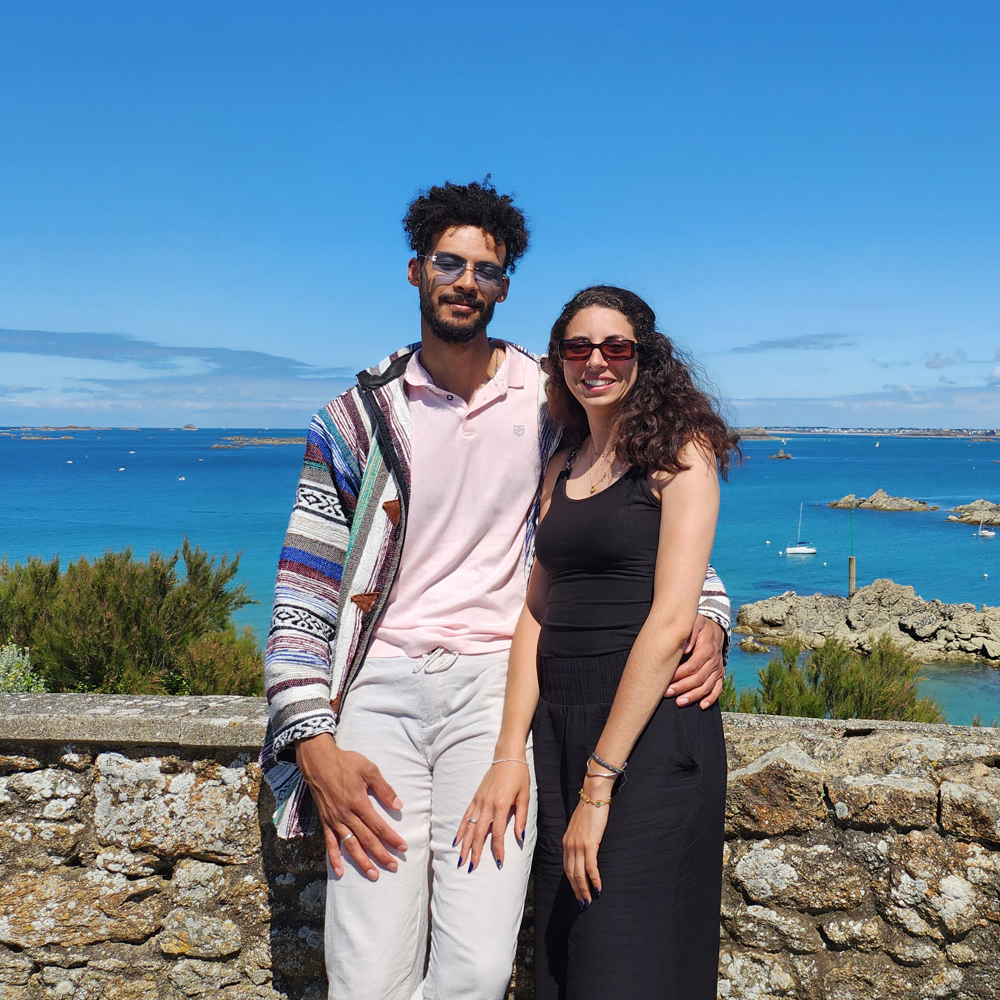08/06/2024
One month later, we went to St. Lunaire, nearby St. Malo, but considerably calmer. Surprisingly we got a very nice day, because it seemed it would be cold and windy, but the sun came out and we could see a very blue ocean while sharing moments with the girls.
-
Kayak Day in Malta

15/06/2024
And there's our first trip on airplane successfully done. I know it wasn't the perfect one adn I ruined a big part of it, but there are still good moments to be remembered. The walks thru Valetta, the swimming in the lagoons, the kayak together, sharing the effort against the waves and wind...
-
Next memory...?
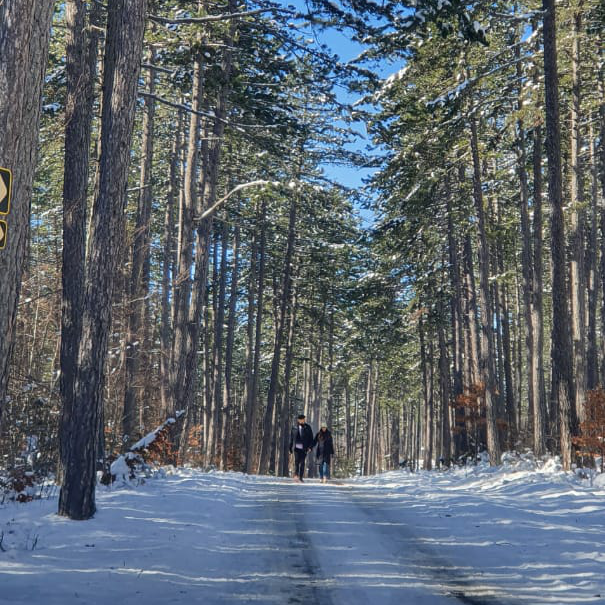??/??/2024
I made it to show how many good moments we had in the past and to show that we really are good together. I really messed up everything, but I'm more than those attitudes I had. We're more than that. I love you. You're the most important person in my life. And seeing all of this we lived, I'm sure that, inshallah, there's a lot more good things for us to live, to share, to build, to see, to feel together. So let's keep going, let's continue walking, being support and taking care of each other.